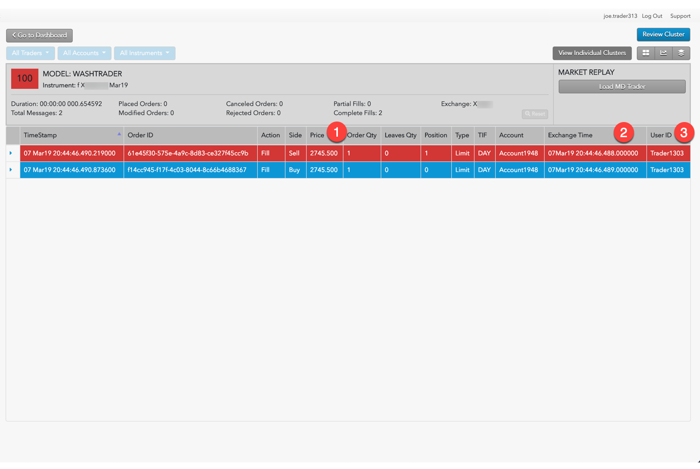

A wash trade is a form of market manipulation in which a trader simultaneously buys and sells the same instrument using the same trader ID or account. Wash trades are typically used to generate artificial volume or to generate commissions for a broker.
In TT Score, the Wash Trader Model analyzes and scores wash trading per user, while the Wash Account Model scores wash trading events per account.
When evaluating a potential wash trade based on Trader IDs, TT Score uses two checks. First, it determines if opposing orders for the same exchange-traded instrument were executed against each other at the same time and price. If so, TT Score then determines whether both trades were made with the same trader ID or same account.
TT Score sets the cluster risk score to 100 if a true wash trade is detected; otherwise it sets the score to 0.
Use the Cluster Scorecard to get a closer look at the activity that triggered the wash trading score. The Cluster Scorecard shows activity that could constitute a wash trade.
